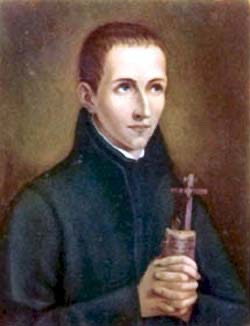

Isusovačka mladež (Zaštitnici studenata i novaka)
Skolastik
Sv. Ivan Berchmans
1599. – 1621.
Belgijski isusovac nije ostavio velika djela ni daleka misijska putovanja, nego primjer vjernosti u običnom danu. Učenjem, molitvom i pažnjom prema drugima pokazao je put svetosti blizak mladima i ministrantima.

Izvor slike
- Spomendan
- 26. studenoga
- Zaštitništvo
- ministranti · studenti i mladi · mladi isusovci
- Životni vijek
- 1599. – 1621.
- Djelovanje
- Mladi i odgoj · Euharistija i pobožnosti · Svakodnevni rad i skrovita služba
- Razdoblje
- 16., 17. stoljeće
- Slavi se
- 26. studenoga
Životopis
U rimskoj redovničkoj bolesničkoj sobi Ivan Berchmans zatražio je raspelo, krunicu i knjižicu pravila svoje zajednice. Imao je dvadeset i dvije godine, a pred njim se zatvarao život koji je tek trebao dobiti svoj svećenički i apostolski oblik. Ti jednostavni predmeti pratili su njegovu posljednju molitvu. U njima se sabralo ono čemu se predavao od mladosti: ljubav prema raspetomu Kristu, pouzdanje u Blaženu Djevicu Mariju i vjernost pozivu u Družbi Isusovoj.
Ivan je rođen 13. ožujka 1599. u Diestu, na području današnje Belgije, kao najstarije od petero djece. Otac mu je bio postolar, a obiteljski su prihodi bili skromni. Dječak je rano upoznao brigu za bližnje. Majka mu je dugo bolovala te joj je pomagao koliko je mogao. Školovanje je za takvu obitelj značilo odricanje, pa je nastavak njegova učenja ovisio i o spremnosti da radi uz školu. U njegovoj mladosti obiteljske obveze i želja za obrazovanjem bile su tijesno povezane.
Godine 1612. otišao je u Mechelen, grad poznat i pod francuskim imenom Malines. Ondje je stanovao i služio u kući kanonika Froymonta, koji mu je omogućio nastavak školovanja. Takav je život od učenika tražio da vrijeme dijeli između knjige i kućnih poslova. Kad su isusovci 1615. u Mechelenu otvorili kolegij, Ivan je postao njihov učenik. Upoznao je zajednicu kojoj će uskoro poželjeti pripadati i način odgoja u kojemu su se učenje i duhovni život uzajamno podupirali.
Odluka o redovništvu sazrijevala je tijekom više mjeseci. U pismu roditeljima iz kolovoza 1616. opisao je kako mu se pitanje budućega životnog staleža vraćalo dok je učio, odmarao se ili šetao. Molio je, pristupao pričesti i razmišljao o potpunom predanju Bogu. Sedamnaestogodišnjak je pritom pokazao i odlučnost i svijest o vlastitoj slabosti: ustrajnost je očekivao od Božje milosti, a roditelje je molio za molitvenu potporu. Njegov je izbor već imao određen oblik. Želio je stupiti u Družbu Isusovu.
Otac je u početku teško prihvaćao tu namjeru. U obitelji s petero djece odlazak najstarijega sina imao je vrlo stvarne posljedice za uzdržavanje kuće. Njegovo protivljenje proizlazilo je iz financijske zabrinutosti i nade da će Ivan moći pomoći svojima. Naposljetku je ipak pristao. Ivan je 24. rujna 1616. u Mechelenu ušao u isusovački novicijat. Obiteljsku je ljubav ponio sa sobom u novi život, premda je njegov odlazak zahtijevao bolan rastanak i promjenu očekivanja s obiju strana.
U pismu roditeljima vlastiti je poziv povezao s Kristovom mukom i euharistijom. Razmatrao je ljubav Onoga koji je za njega trpio i hranio ga svojim tijelom. Iz toga je zahvalnog sjećanja rasla želja da svoj život velikodušno stavi u Kristovu službu.
Nekoliko mjeseci nakon njegova ulaska u novicijat umrla mu je majka. Otac se poslije njezine smrti i sam odlučio za svećenički poziv te je 1618. bio zaređen. Umro je prije nego što se Ivan mogao vratiti i ponovno ga vidjeti. Tako je mladi redovnik u kratkom razdoblju izgubio oba roditelja. Njegovo se razdoblje priprave za buduće poslanje odvijalo usporedno s tim obiteljskim gubitcima, daleko od doma u kojemu je odrastao.
Novicijat je imao svoj ustaljeni red molitve, rada, duhovne pouke i zajedničkoga života. Ivan je tu prepoznao neposredno područje svojega odgovora Bogu. Životopisi osobito ističu njegovu točnost u izvršavanju dužnosti, pažnju prema subraći i vedrinu. Nije čekao završetak odgoja da bi ozbiljno živio svoje redovništvo. Poslušnost pravilima prihvaćao je kao svakodnevnu vježbu u darivanju vlastite volje, a susrete s drugima kao priliku za ljubaznost i služenje. Takva se postojanost mogla opažati iz dana u dan, u zajednici koja je s njim dijelila isti raspored.
Nakon dvije godine novicijata položio je 25. rujna 1618. redovničke zavjete. Kratko je nastavio studij filozofije u Antwerpenu, a potom su ga poglavari poslali u Rim. Na put je krenuo sa subratom i velik dio puta prevalio pješice. U Rim je stigao 31. prosinca 1618. Za mladoga Flamanca to je bio ulazak u novu sredinu i međunarodnu isusovačku zajednicu. U Rimskom kolegiju nastavio je filozofski studij kao skolastik, redovnik koji se pripravljao za svećeništvo.
Učenje je shvaćao kao dio povjerenoga mu poslanja. Ozbiljno je pristupao nastavi i pripremi rasprava, čuvajući vrijeme za molitvu i život zajednice. Isusovački se odgoj oslanjao i na javne rasprave u kojima su studenti morali jasno izložiti i braniti ono što su naučili. Ivanovo je sudjelovanje u njima pokazalo sposobnost i marljivost zbog kojih su mu poglavari iskazivali povjerenje. Njegova pobožnost prema Mariji pratila je taj studentski život, s njegovim rokovima, obvezama i zahtjevnim učenjem.
Dana 8. srpnja 1621. sudjelovao je u javnoj filozofskoj raspravi. Početkom kolovoza povjerena mu je još jedna takva zadaća, ovaj put u Grčkom kolegiju u Rimu. Bio je pri kraju filozofskoga studija i činilo se da se pred njim otvara nastavak dugotrajne priprave. Ubrzo se teško razbolio. Isusovački životopis opisuje crijevnu bolest praćenu groznicom i plućnim tegobama. Bolest je napredovala brzo i njegova se svakodnevica u nekoliko dana preselila iz učionice u bolesničku sobu.
Kad je postalo jasno da mu se bliži smrt, primio je svetu pričest kao popudbinu. Subraća su u procesiji pratila donošenje Presvetoga Sakramenta bolesniku. Zajednica s kojom je učio i molio sada ga je pratila u posljednjem predanju. Ivan je zatražio raspelo, krunicu i knjižicu pravila te posljednju noć proveo u molitvi. Umro je ujutro 13. kolovoza 1621. u Rimu. Ostao je isusovački skolastik: do svećeničkoga ređenja nije stigao.
Glas o njegovoj svetosti sačuvao se među onima koji su ga poznavali i proširio izvan Družbe. Papa Pio IX. proglasio ga je blaženim 1865., a papa Lav XIII. svetim 15. siječnja 1888. Posebno ga štuju ministranti i studentska mladež. Mladi u njegovu životu mogu prepoznati iskustvo školovanja, izbora zvanja, obiteljskih očekivanja i sazrijevanja vjere. Ivan je kroz sve to prolazio u dobi u kojoj se budućnost još zamišlja i iščekuje.
U vlastitom kalendaru Družbe Isusove njegov se spomendan slavi 26. studenoga, dok ga Rimski martirologij spominje 13. kolovoza, na dan smrti. U Crkvi je ostao blizak pratitelj mladih koji traže kako svoj život predati Kristu. Njegova posljednja molitva uz raspelo, krunicu i pravila osvjetljuje i godine koje su joj prethodile: povjerenje u Gospodina učio je izražavati u konkretnim dužnostima, a dar sebe obnavljati u danu koji mu je bio povjeren.
Pročitaj više na izvornoj stranici ↗